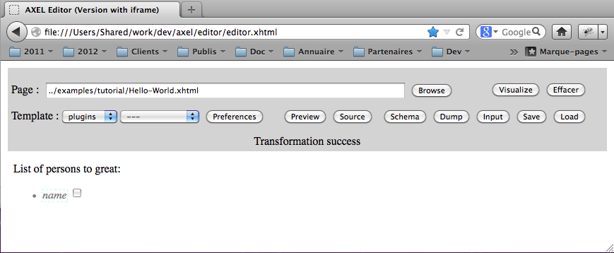
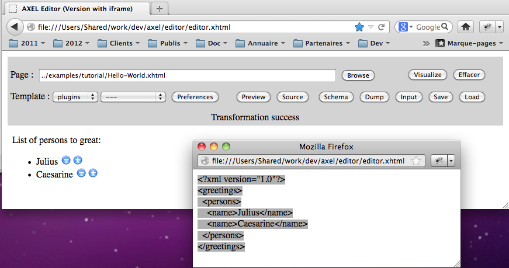
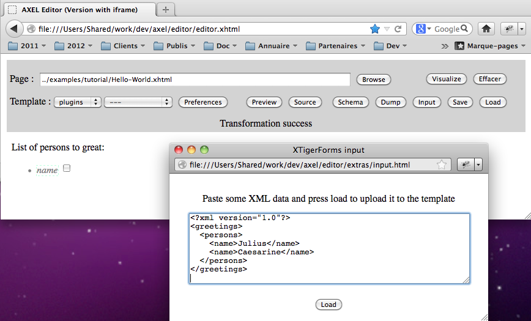

This manuel is still in progress, Any help welcome to create more documentation !
The AXEL Javascript library transforms XHTML documents that follow the XTiger XML language specification into custom XML editors running inside a browser window. These editors allow to edit XML documents conformant with an XML document model implicitly defined by the template. The library is client-side, the only interactions with the server are to get a template and to load and save XML data; all this can be realized with Ajax calls. AXEL can be deployed on top of any Web framework.
The classical workflow to develop an XTiger template is the following one :
.xhtml extensionThe .xhtml extension is the best way we have found to force most browsers MIME-Type sniffer algorithm to detect the file as an "application/xhtml+xml" file which is required to properly parse XTiger XML elements. There is an FAQ entry on this subject.
This workflow has been tested with Firefox because it allows local file access inside the browser window which allows to start the demonstration editor from the file system and use it to load templates also from the file system. We do our best efforts to support the other major browsers: Safari and Chrome, Opera, Internet Explorer (version 7 and above).
During development, if you want to apply the workflow above, you may need to change one of the security settings in Firefox to give access to the local file system URLs to the XMLHttpRequest object. For that purpose open the about:config URL inside your browser and set security.fileuri.strict_origin_policy to false (with one click) (source: http://kb.mozillazine.org/Security.fileuri.strict_origin_policy).
Here are a few screen shots summarizing the different steps.

Editor generated from the ../../examples/tutorial/Hello-World.xhtml template by entering its path and hitting the Visualize button (steps 1 and 2)

Copying XML output after entering some data and hitting the Dump button (steps 3 and 4)

Pasting previous XML output into the input window displayed by hitting the Input button, in the background you can notice that the editor has been regenerated by hitting the Visualize button, next step would be to hit the Load button to send back the XML to the editor (steps 5 and 6)
Once you have created some template you can use some Javascript code to transform the templates into editors and serve them from you application server. Basically there are different ways to do this :
The advantage of the last three methods is that you can keep your template independant from the library and its location (no URL dependency). This is a better practice for instance if you share your template with other developers who do not have necessarily the same environment. However you can also keep templates independant from the library location with the first method if your server injects the library and the onload Javascript handler when serving the template to the user.
The AXEL library provides some utility functions and an xtiger.util.Form class that manage template file loading, template transformation and XML content generation and loading inside the document generated from the template.
In addition to the tutorials above (the try it ! links), you may have a look inside the source files of the demonstration editing applications :
Please read the FAQ for more information.
You need to install the Yahoo Javascript compressor utility first, and update its path inside scripts/ant.properties in order to generate the minified version of the library with the build.lib target of the scripts/build.xml ant script.
You can edit the scripts/ant.properties file to select which plugins or filters you want to include within the library.
You must also include the library CSS file in your application. For instance this CSS is required to hide / show the editing fields of the primitive editors as the user clicks on them. You can use the default one into axel/axel.css. For a Web page that loads the template with Ajax, or for an auto-editable template you just need to include it with :
<link rel="stylesheet" href="{PATH_TO_AXEL}/axel.css" type="text/css"/>
If you are using a Web page and then load the template inside an iframe in a second time, you may find handy to call the injectStyleSheet({CSS_FILE_URL}) method of the xtiger.util.Form object right after the template transformation, to inject the style sheet in host iframe.
The bundles folder which is under the axel folder must be available on the web too so that you can give its access path to the xtiger.util.Form contructor. This folder contains resources used by the core libary editors and by the plugin editors, such as images. For instance it defines the minus and plus icons which are used by the repetition editor.
In summary, for a quick start you can copy the axel folder from the distribution into your deployment environment :
axel/axel.js axel/axel.css axel/bundles/* (everything inside bundles)
Last update: Stéphane Sire, 2013-01-27